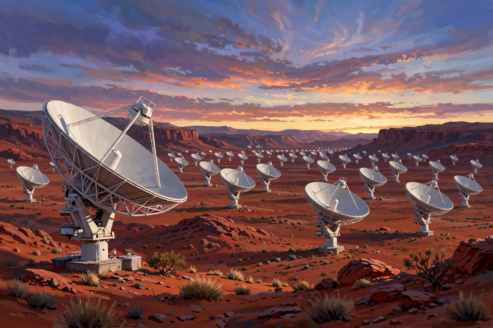

International radio telescope project in Australia and South Africa
| Square Kilometre Array (SKA) | |
|---|---|
 Artist's impression of SKA-Mid dishes in the Karoo | |
| Organisation | SKA Observatory (SKAO) |
| Locations | Murchison, Western Australia; Karoo, South Africa |
| Components | SKA-Low (low-frequency aperture array); SKA-Mid (dish array) |
| Construction | Began 2022; completion planned late 2020s |
The Square Kilometre Array (SKA) is an international radio telescope project being built in Australia and South Africa. When complete, its combined collecting area will approach one square kilometre, making it the largest radio telescope in the world, with sensitivity and survey speed far exceeding any existing instrument. It is operated by the intergovernmental SKA Observatory, headquartered at Jodrell Bank in the United Kingdom.
The array has two components. SKA-Low, in Western Australia's Murchison Shire, will consist of more than 130,000 Christmas-tree-like dipole antennas observing low frequencies (50–350 MHz). SKA-Mid, in South Africa's Karoo desert, will comprise nearly 200 dish antennas, incorporating the 64-dish MeerKAT precursor telescope, observing mid frequencies up to about 15 GHz. Both sites were chosen for their extreme radio quietness and clear skies. Construction formally began in December 2022.
The SKA will test general relativity using pulsars, map the distribution of neutral hydrogen across cosmic time to study the early universe and dark energy, investigate the formation of the first stars and galaxies, study cosmic magnetism, and search for signs of life — including through SETI observations of unprecedented sensitivity. Its data rates, requiring exascale computing and dedicated science data processors, rank among the largest of any scientific facility.
Conceived in the 1990s, the project was organised through an international consortium before the SKA Observatory convention was signed in Rome in 2019. Member states include Australia, South Africa, the United Kingdom, China, Italy, the Netherlands, Portugal, and Switzerland, among others.